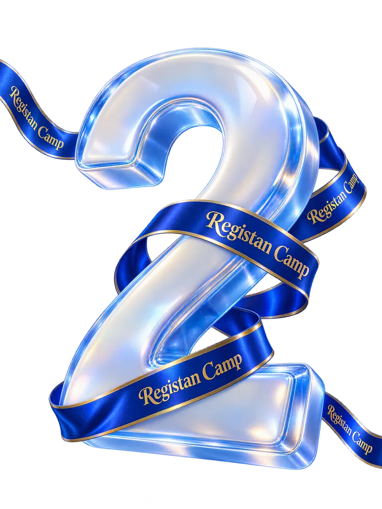
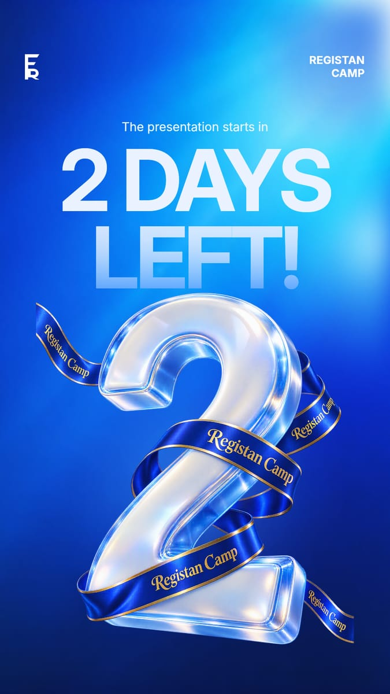

Open source · Apache-2.0 · pre-alpha
Gesso is an image engine for AI agents. An agent builds a composition by sending small patches to named layers, and every result opens in Photoshop as an editable PSD.

How it works
Agents are bad at pointing and dragging, and good at structured data. So a Gesso document is data, every layer has a name, and changes are written against those names.
The agent sends a document: artboards, layers with stable IDs like headline, and the assets they use.
Every change is a small operation on those IDs. A patch applies completely or not at all, and each one becomes a revision you can go back to.
canvas_render returns a preview image, so the agent can check its own work before it says it is done.
PNG, JPEG or WebP for each artboard, or one PSD that holds every artboard.
{
"doc": "promo-01",
"baseRevision": 12,
"ops": [
{ "op": "set", "target": "#headline", "path": "content", "value": "Autumn Edit" },
{ "op": "set", "target": "#card-photo", "path": "opacity", "value": 0.8 },
{ "op": "move", "target": "#logo", "to": "top" },
{ "op": "remove", "target": "story-9x16 #old-badge" }
]
}{ "revision": 13, "changed": ["headline", "card-photo", "logo", "old-badge"], "warnings": [] }
promo-01 rev 13
▣ post-4x5 1080×1350
├ backdrop shape role=background
├ card shape role=container [clip-base]
│ ↳ card-photo image clip multiply "Model portrait"
├ headline text role=headline "Autumn Edit"
└ logo image role=logoMade with Gesso
This poster was rebuilt from a Uzbek-language original and translated to English. Magnific generated two images. Gesso did the type, light, layout and the second size.

| Layer | Opens in Photoshop as |
|---|---|
| Background | Solid color fill |
| Backdrop | Pixel layer (Magnific) |
| Key light | Pixel layer, Screen |
| Registan Camp | Live text, Inter Bold |
| Kicker | Live text, Inter |
| 2 DAYS | Live text, Inter Display Bold |
| LEFT! | Live text with a fade clipped to it |
| Hero 2 + ribbon | Pixel layer (Magnific), transparent |
| Grade | Curves adjustment |
Magnific: 2 generations, 280 credits. The 9:16 version cost nothing extra; its backdrop is a crop of the 3:4 one.
What it does
The file an agent makes with Gesso is the file a designer finishes in Photoshop.
Agents never draw. They set content on #headline or move #logo to the top. Selectors are #id, @role, .tag and $selection, and can be scoped to one artboard.
Text stays live text, adjustments stay adjustment layers, shapes keep their vector masks and artboards stay artboards. Each layer also carries Gesso's own pixels, so the file looks right before Photoshop redraws anything.
Skia renders in 8-bit sRGB and blends in gamma-encoded space, which is Photoshop's default. That covers the 16 standard blend modes, clipping, masks, groups, curves, levels, hue/saturation and brightness/contrast.
A layer can sit at exact coordinates, or at an anchor with margins and percentage sizes. Add a 9:16 artboard and the anchored layers find their place in it.
Every patch names the revision it was written against. If the document changed in the meantime, the agent gets back the changes it missed instead of overwriting them.
Gesso never calls an image model itself. The agent sends generative work to a connector you have, such as Magnific or Higgsfield, and the result comes back as its own layer with a record of the model and prompt.
Get started
You need Node 22, pnpm 10 and Claude Code. Any agent that speaks MCP works the same way.
git clone https://github.com/bolenX/gesso
cd gesso
pnpm install
pnpm buildclaude mcp add gesso -- node "$PWD/packages/mcp-server/dist/bin.js"Gesso reads assets and writes exports relative to the folder you start Claude Code in.
Make a 1080 × 1350 poster for a Friday design meetup. Use assets/photo.jpg as the background and put the title bottom-left in Inter Bold. Show me a preview, then export a PSD to out/.
Text needs a font file. Gesso finds it through a font asset, and the PostScript name tells Photoshop which font to use when the file opens:
"inter-bold": {
"uri": "/usr/share/fonts/opentype/inter/Inter-Bold.otf",
"kind": "font",
"family": "Inter Bold",
"postscriptName": "Inter-Bold"
}| Tool | What it does | Status |
|---|---|---|
| canvas_create | Start a document from a full spec; returns the outline | works |
| canvas_outline | Compact tree of artboards and layers | works |
| canvas_get | Full JSON for the layers a selector matches | works |
| canvas_selection | Read or set the shared selection | works |
| canvas_patch | Apply operations against a revision | works |
| canvas_history | List revisions and revert | works |
| canvas_render | Preview images at any scale | works |
| canvas_export | PNG, JPEG, WebP or layered PSD | works |
| artboard_create | New artboard from a preset, with reflow | planned |
| asset_import | Bring in an image from a URL or path | planned |
| gen_prepare | Package an expand or fill job for a generator | planned |
Status
Documents, patches, history, rendering and PSD export work today. Each release ships only when its example files pass.
Not done yet: reading PSDs back in, gradient and stroked shapes as live layers, right-to-left text in PSDs, a render cache, and the planned tools listed above. 3D, video, Actions and plugins are out of scope.